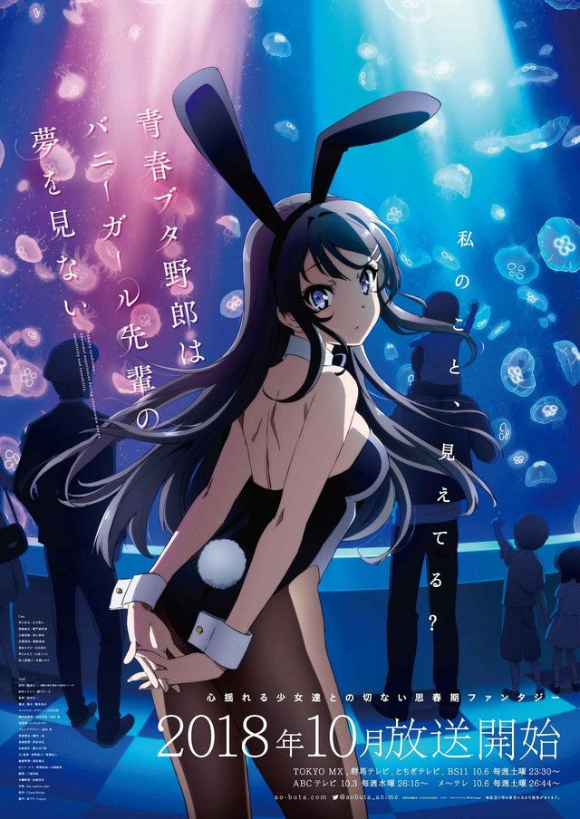
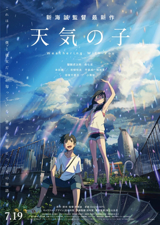

Phim mới thêm

Anime BộHội Chứng Tuổi Thanh Xuân

Anime lẻĐứa Con Của Thời Tiết - Tenki no Ko
Weathering With You, Mưa nắng bên em, Nắng mưa cùng bạn
 Anime bộ
Anime bộ
Pokémon
Bảo Bối Thần Kì
Không tìm thấy kết quả.

Anime Bộ
Anime lẻWeathering With You, Mưa nắng bên em, Nắng mưa cùng bạn
Anime bộ
Bảo Bối Thần Kì
Không tìm thấy kết quả.